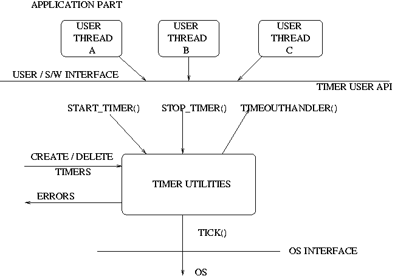

| Document id | : |
ITS-SRS-CDSU_TIMER-001 |
| Document name | : |
Timer Software Requirements Specification |
| Author(s) | : |
Indu Mishra |
| Contributor(s) | : |
Shiv Kumar B, Titty Thomas |
| Approved By | : |
Prakash R. |
| Document Source | : |
Internet Telephony Group, C-DOT, Bangalore |
| Copyright @ 2003 by C-DOT. All rights reserved. Contents of publication may not be reproduced in any form without permission from C-DOT |
| Document History | ||||
|---|---|---|---|---|
| Version No | Revised By | Released On | Approved By | Remarks |
| Draft 1 | Shiv Kumar B | 26th Feb, 2003 | Prakash R | The document was released as the Timer Module |
| Draft 2 | Shiv Kumar B | 12th May, 2003 | Prakash R | Feedback incorporation: |
| |
|
|
|
|
| |
|
|
|
|
| |
|
|
|
|
1 Introduction
1.1 Purpose & Scope
1.2 Definitions,Acronyms and Abbreviations
1.3 References
1.4 Overview
2 Overall Description
2.1 Product Perspective
2.2 Product Functions
2.3 User Characteristics
2.4 General Constraints
2.5 Assumptions & Dependencies
3 Specific Requirements
3.1 External Interface Requirements
3.2 Functional Requirements
3.3 Performance Requirements
3.4 Design Constraints
3.5 Software System Attributes
3.6 Other Requirements
3.6 Deliverables
This document gives the Software Specification Requirements for building the Timer Utility using New Timing Wheel Implementation Algorithm [HTM97].It covers all the functional, performance and interface requirements for the Timer Module. This document is an enhancement of existing Timer Module for solving problems related to
[HTM97]: Hashed and Hierarchical Timing Wheels: Efficient Data Structures for Implementing a Timer Facility , by George Varghese and Anthony Lauck, IEEE/ACM Transactions on networking, Dec 1997 .
The overview of the document is as follows:
Section 2 gives the general description of the Timer Class i.e. its function, perspective, its capabilites and the user characteristics.
Section 3 gives the specific requirements of the Timer Class. It
tells about the interface used, performance requirements of the Timer, design
constraints, attributes and the other requirements if any.
Timer Module is responsible for providing a number of Software timers which can be used by any stack, or a utility. Timers consist of following components:
User should have knowledge about the usage of Timers Module and its API's. Implementation details are not required. Users should also be aware of Thread Programming.
The functional diagram to show overall view of Timer Utility is shown in fig 3.2.1

fig 3.2.1
The functional requirements of the Timer is as follows:
M : Mandatory
O : Optional
CM : Conditional Mandatory
| Fields | Mandatory | Description |
| TimeUnits | M | TimeUnits for which Timer is to be started.Can be in Seconds /Milliseconds/Hours etc |
| TimeCounts | M | Time count eg 10 ,20 etc. |
| Destination Module Id | M | Contains the destination at which TimeOut event has to be reported. |
| Opcode | M | Message type and is used to construct message structures which are used by userTimeOutHandler. |
| UserInfo[] | O | Contains additional details regarding a timer started. |
| TimeOutReportType | M | Handling of timeout will take place according to this parameter.If its of type Message then Message is constructed else if its of type CallBackFunction then CallBackFunction is used. |
| CallBackFunction | CM | Used when timerReportType is Callback.It sends information back to the Timer process from destination to client. |
Same as General Constraints( 2.4)
1.Source
Code:
The Source code contains all * .cpp and * .h files , makefile.
2.Test Program:
Program used to show usage of Timer Module and User specific data parameters which are required. Also threads use .
3.User Guide:
Guide for user reference.
4. API's Documents:
Documentation for all the API's in the Timers to be given.